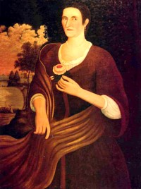

by
Stefan Bielinski
Catharina De Wandelaer was born in August 1689 and baptized in the Albany Dutch church. She was the daughter of Manhattan merchant and Albany landowner Johannes and his wife, Sara Schepmoes De Wandelaer. Her Huguenot father came to New Netherland from Leyden. She grew up in her father's homes on Manhattan and in Albany.
In June 1705, she was among the eight children named in the will filed by her father.
She married brewer Leendert Gansevoort in May 1712. By 1730, their eight children had been baptized in the Albany Dutch church where both parents were frequent baptism sponsors.
A "sickness" swept through Albany during the winter of 1731-32 - decimating the city's population. Virtually every household was effected. Catharina lost daughters Sara and Agnietie during that troubled time.
These Gansevoorts were Albany mainstays - living in the Gansevoort homestead on Market Street and augmenting the family brewing business. Traditional sources have accorded much credit to her for developing Leendert's enterprises.
Leendert Gansevoort died in 1762. Catharina was named sole beneficiary during her widowhood. The will instructed her not to dispose of any of the estate but to benefit from its incomes. Her name appeared on an assessment roll as the owner of their substantial third ward home and lot in 1767. Catharina De Wandelaer Gansevoort died in August 1767 - days shy of her seventy-ninth birthday.
notes
Copy of a portrait by Nehemiah Partridge
done about 1718. Collection of the
former New
York State Historical Association in Cooperstown. A matching portrait
of Leendert Gansevoort resides
in the same collection. Sources: The life of Catharina De Wandelaer Gansevoort
is CAP biography number 6167. This profile is
derived chiefly from family and community-based
resources.
Sources: The life of Catharina De Wandelaer Gansevoort
is CAP biography number 6167. This profile is
derived chiefly from family and community-based
resources.
first posted 8/20/03; updated 11/27/17